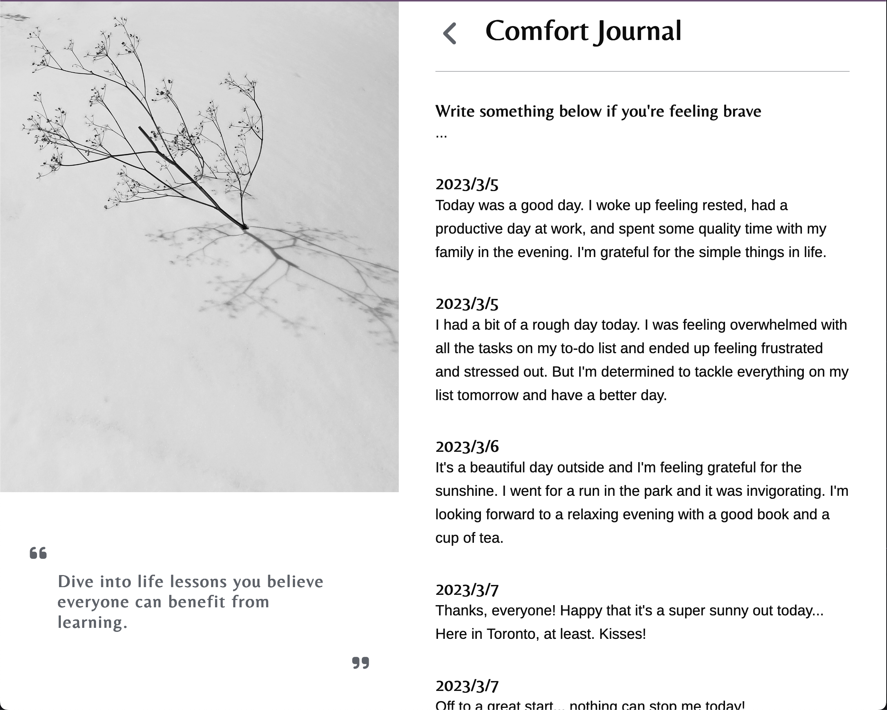

Work



Paige Thai is a Toronto based web developer and designer. She's currently a student at Juno College of Technology, acquiring the fundamental skills to build a dynamic, responsive, accessible website using HTML5, CSS3 - SASS, JavaScript, ReactJS and Firebase. She has also gained proficiency in paired programming, Git and Git collaboration.
Previously she was the Project Manager at Sheertex/SRTX where she worked on a cross-functional team .... FINISH THIS